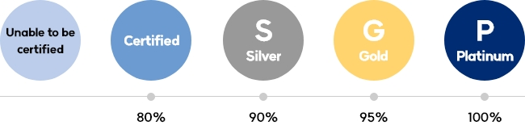

SK innovation intends to set a mid- and long-term target of achieving 85% recycling rate of waste generated at business sites by 2025. This ambition is the average target of SK innovation and its major subsidiaries, set by reflecting the requirements of the Framework Act on Resource Circulation in Korea, and SK innovation plans to actively promote activities to achieve and maintain the goal in 2025.
To achieve this target, we plan to strengthen cooperation with waste treatment partners to improve the recycling rate, proceeding to discover internal tasks to improve waste recycling. Tasks under review include obtaining ZTWL certification to upgrade the waste management system for SK innovation and its major subsidiaries, developing recycling technology to secure stable recycling processing capabilities, and discovering new recycling partners. At the same time, through the SHE coordination council, SK innovation and its major subsidiaries intend to share the status of task development and execution while inducing mutual benchmarking to increase the efficiency of goal achievement.
Certification of resource circulation level by Underwriters Laboratory(UL), a verification agency located in the United States. The UL quantifies the recycling rate which excludes non-recyclable waste from total waste generated and then assigns grades – certified, silver, gold, and platinum.
